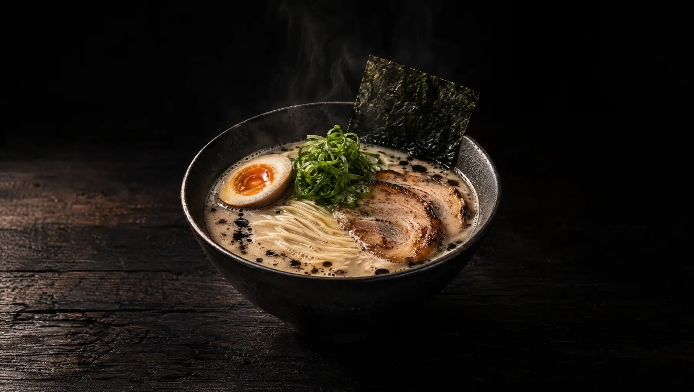
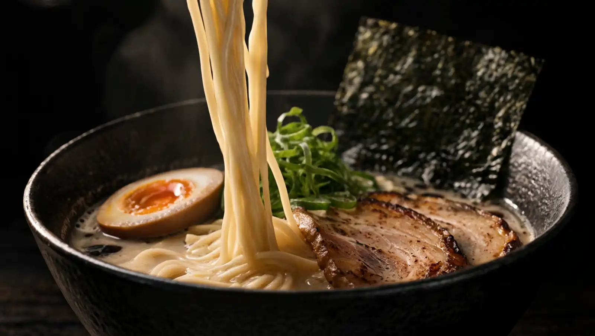
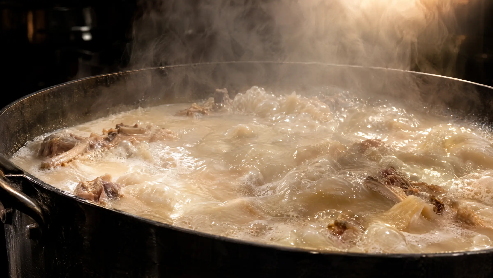
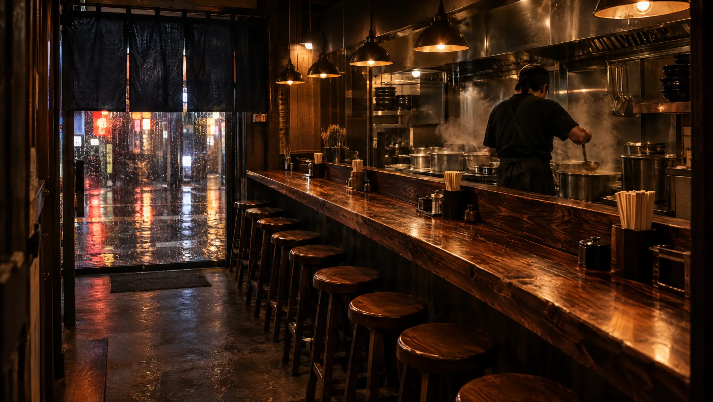
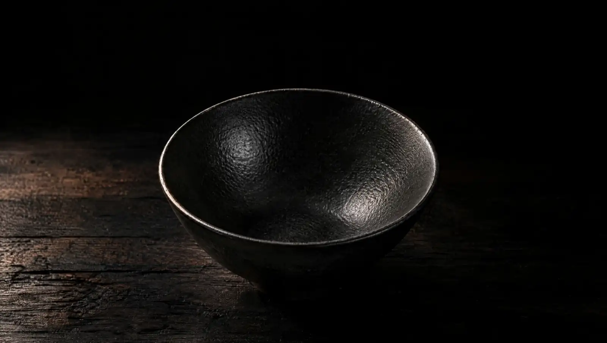

黒湯Kuroyu
The one to start with. Everyone does.
Pork bone broth, chashu, egg, negi, nori.
Tonkotsu S$17

You'll finish it in eight minutes.
黒湯Kuroyu
A tonkotsu counter in Keong Saik. Open till two.

Nobody talks for the first minute.

Pork bones at a hard, rolling boil. Not a simmer.
The fat and collagen give way. The broth turns the colour of milk.

